Conte o seu sonho.
Você compartilha o espaço, as suas ideias e o que deseja sentir neste Natal.
UM CONVITE AO EXTRAORDINÁRIO
A luz que acolhe. O detalhe que emociona.
O seu espaço, vestido de memórias.
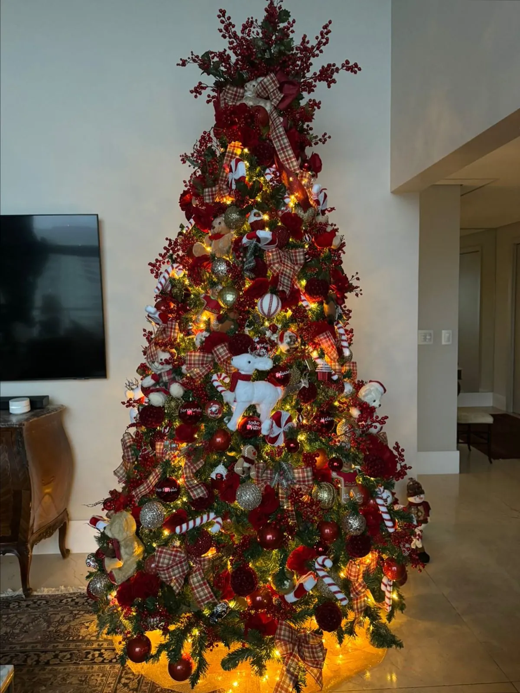
O Natal tem esse poder.
De transformar espaços em sentimentos.
Uma árvore que reúne. Uma entrada que abraça. Um pequeno detalhe que faz os olhos brilharem. É essa atmosfera que buscamos em cada composição.
Há 23 anos, Regis Motta combina cores, texturas e luz para criar decorações que carregam a personalidade de quem vive o espaço.
Conheça quem cria essa magia ↗Um passeio pelos detalhes que
fazem parte da nossa história.
Do dourado ao prateado, do clássico ao floral. Cada árvore nasce da personalidade de quem vive o espaço.
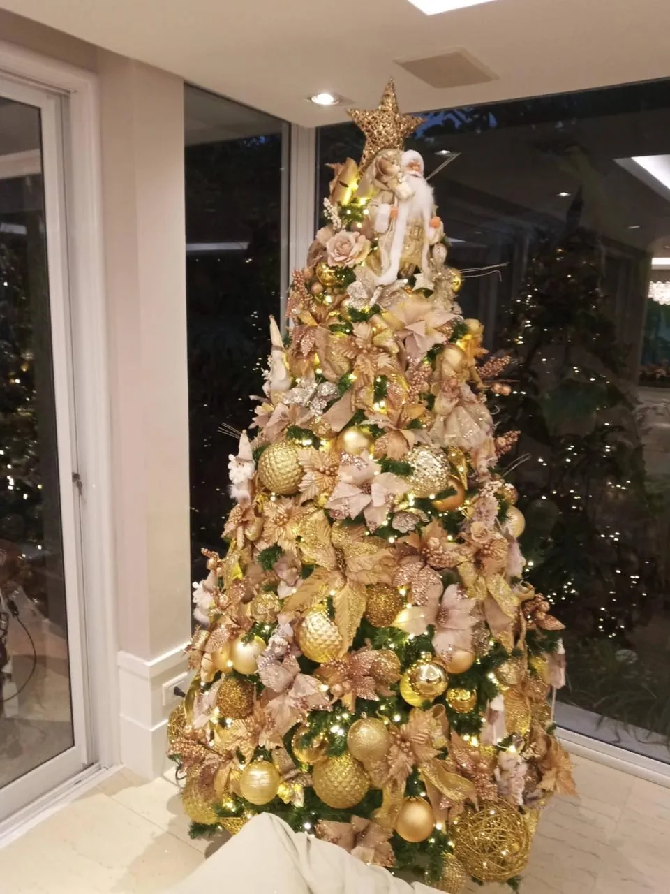
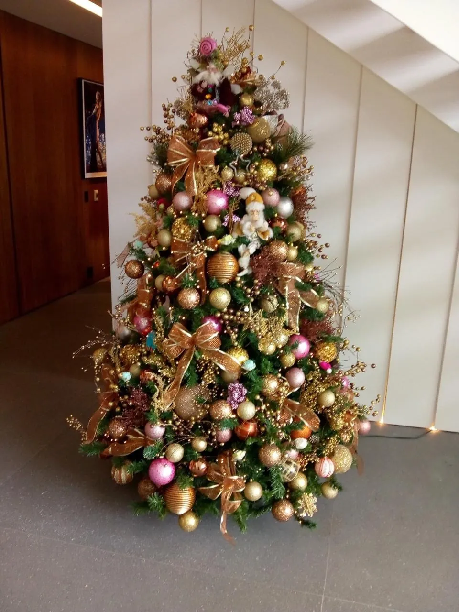
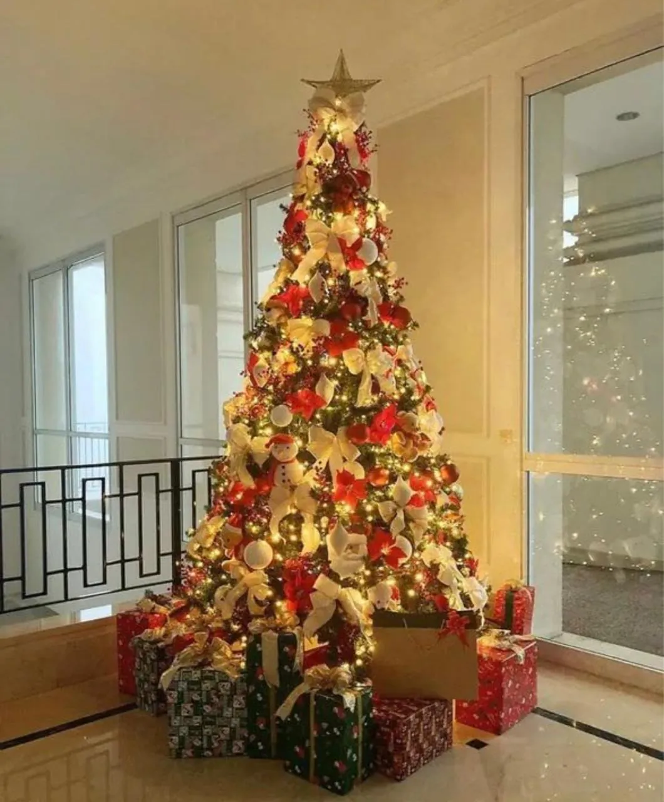
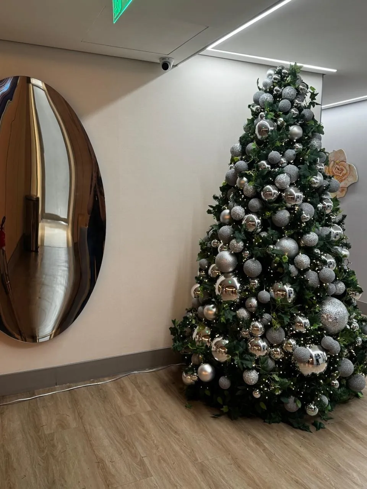
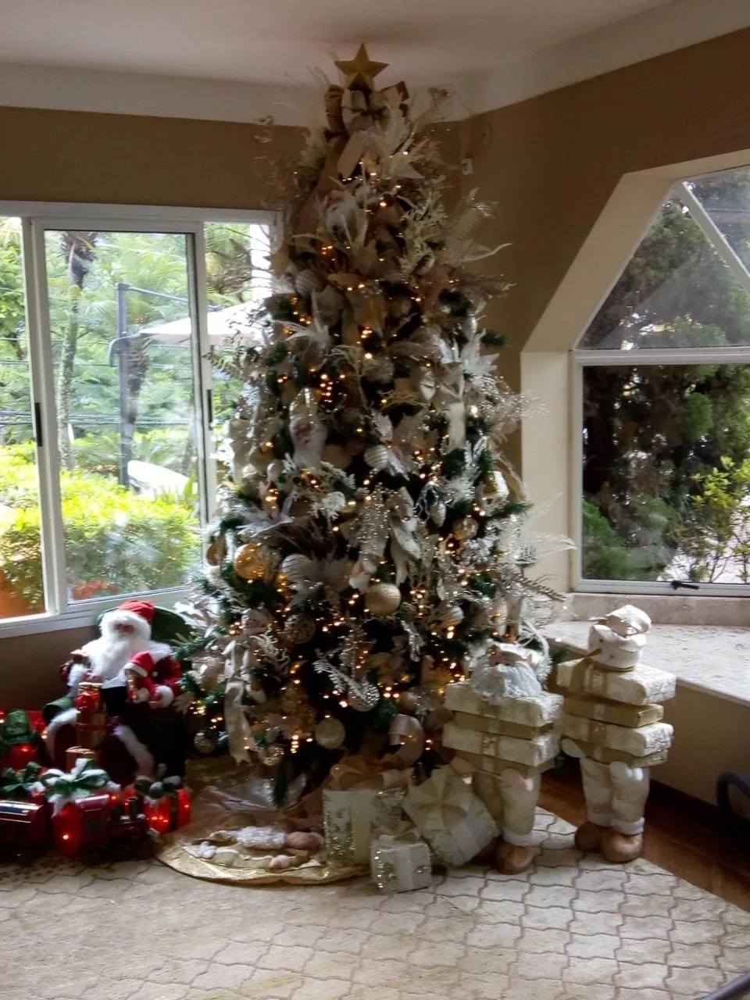
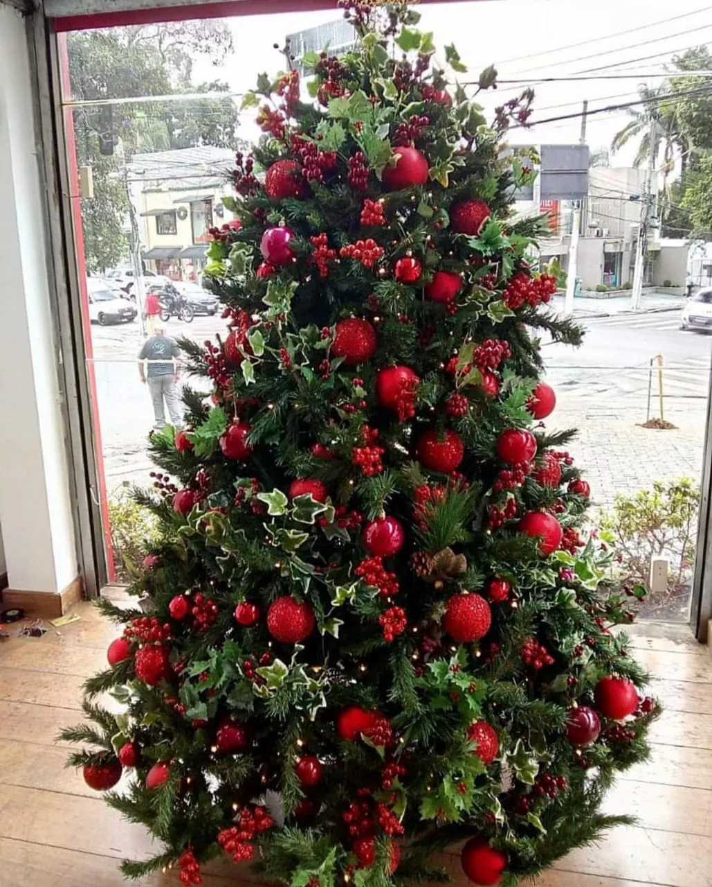
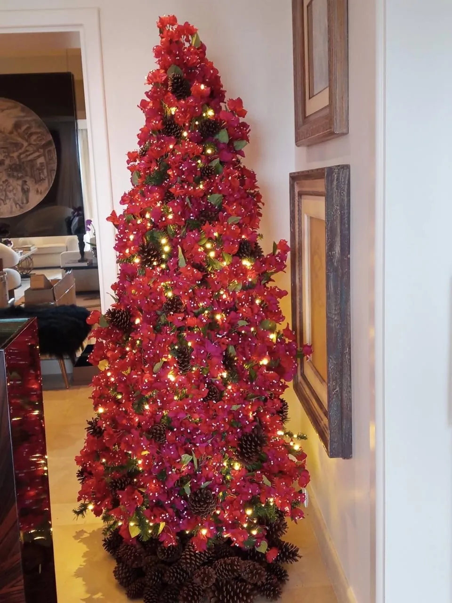
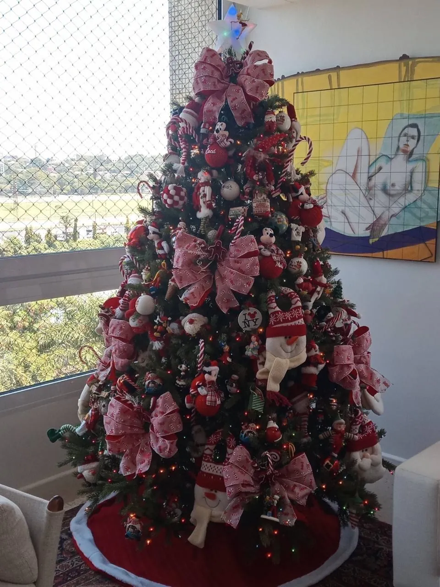
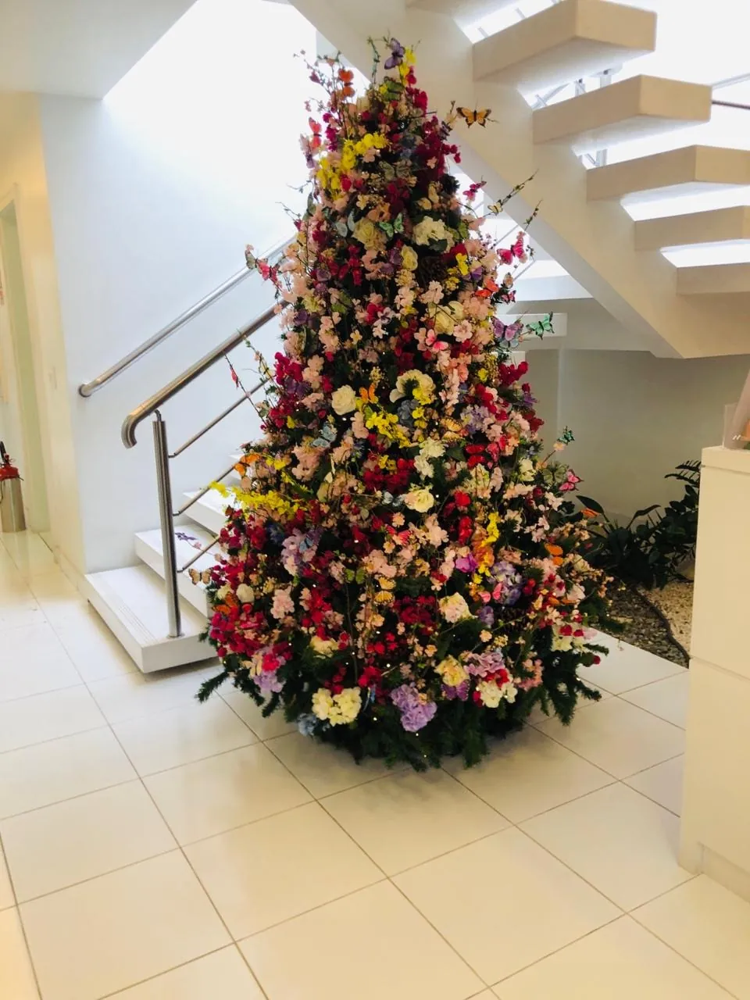
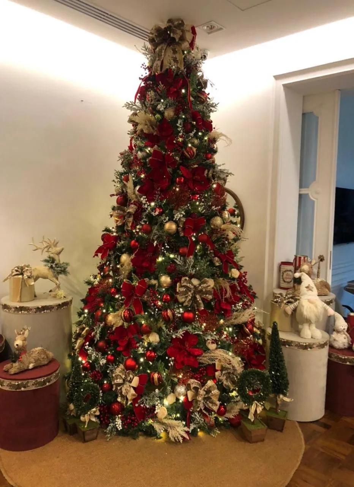
Não é só sobre decorar.
É sobre fazer sentir.
Da primeira ideia ao último laço.
Um olhar completo para o seu espaço.
Salas, halls, mesas e cantinhos especiais. Criamos composições que conversam com o ambiente e acolhem quem chega.
CASAS · APARTAMENTOS · AMBIENTES INTERNOSFachadas, entradas e varandas com presença e harmonia. A experiência do Natal começa antes mesmo de abrir a porta.
ENTRADAS · FACHADAS · ÁREAS EXTERNASRestauração de árvores, guirlandas e peças natalinas para renovar a beleza do que já faz parte da sua história.
RESTAURAÇÃO · RENOVAÇÃO · MEMÓRIA AFETIVAÁrvores e composições decorativas por locação. Uma forma prática de viver um cenário especial, sem adquirir toda a estrutura.
ÁRVORES · GUIRLANDAS · COMPOSIÇÕESCores, proporções, texturas e elementos escolhidos a partir do seu espaço e da atmosfera que você deseja criar.
PERSONALIDADE · COMPOSIÇÃO · PROJETO SOB MEDIDAProjetos para lojas, clínicas, escritórios e condomínios. Um convite para clientes, visitantes e moradores entrarem no clima de Natal.
EMPRESAS · COMÉRCIO · CONDOMÍNIOS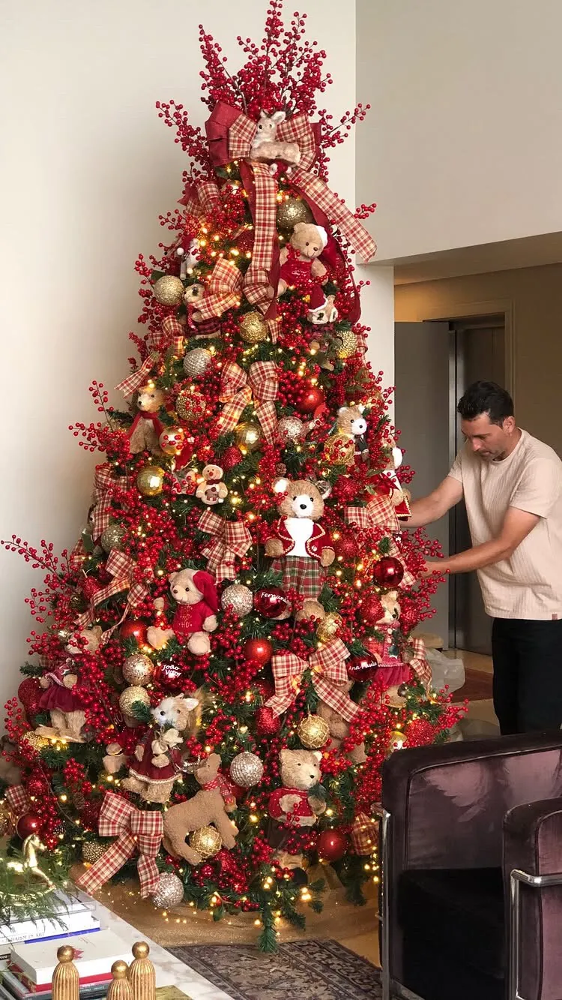
Por trás de cada laço, há uma escolha. Por trás de cada composição, um olhar que entende que a beleza está no conjunto — e que cada detalhe importa.
Regis Motta transforma ambientes com técnica, cuidado e paixão pelo Natal. Projetos internos e externos, pensados para a sua casa ou para a sua empresa.
Você compartilha o espaço, as suas ideias e o que deseja sentir neste Natal.
Definimos o estilo, a composição e uma proposta personalizada para o ambiente.
Organizamos os elementos e executamos a montagem, com atenção a cada acabamento.
Conte um pouco sobre o seu espaço.
O primeiro passo é imaginar juntos.
Sim. Os projetos atendem casas, apartamentos, lojas, clínicas, escritórios e condomínios, sempre considerando as características de cada espaço.
Sim. A restauração de árvores, guirlandas e peças natalinas devolve beleza aos elementos que já fazem parte da sua história. A proposta é definida após conhecer as peças.
Sim. Há opções de aluguel de árvores, guirlandas e composições. A seleção dos elementos e as condições são definidas na proposta de cada projeto.
Recomendamos contato com 30 a 60 dias de antecedência, especialmente para projetos maiores ou para novembro e dezembro. As datas dependem da disponibilidade da agenda.
A proposta é personalizada. Informações sobre o espaço, fotos do ambiente e o serviço desejado ajudam a definir composição, valores e prazos.